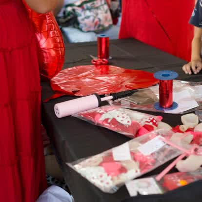

Comment organiser une animation d'anniversaire réussie pour son enfant à La Réunion ? La réponse tient en une idée : confiez les activités à des animateurs professionnels, et profitez de la fête avec votre marmaille. Chez Pull Up Événements, agence événementielle réunionnaise depuis 9 ans (4,9/5 sur Google), nous animons anniversaires et fêtes d'enfants à domicile, en salle ou en plein air, du Nord au Sud de l'île. Voici notre guide complet, âge par âge.
Que comprend une animation d'anniversaire clé en main ?
Un anniversaire d'enfant réussi, ce n'est pas juste un gâteau : c'est un fil rouge qui tient les enfants en haleine pendant deux heures. Une prestation Pull Up comprend généralement :
- Un animateur dédié qui mène le jeu, gère les temps calmes et les temps forts, et veille sur chaque enfant ;
- Des activités adaptées à l'âge : ateliers créatifs, maquillage, jeux de coopération, chasse au trésor ou mini-disco ;
- Une touche « waouh » : mascotte géante, sculpture de ballons, barbe à papa ou photobooth ;
- Le matériel et la logistique : nous arrivons équipés, nous installons et nous rangeons — vous n'avez rien à porter.

Quelle animation choisir selon l'âge ?
C'est la clé d'un anniversaire réussi : une activité passionnante à 4 ans ennuie un enfant de 10 ans, et inversement.
- 3 à 5 ans — mascottes câlines, comptines, maquillage tout doux, parcours de motricité et bulles de savon : de l'émerveillement, en séquences courtes ;
- 6 à 8 ans — ateliers créatifs à thème, chasse au trésor, jeux d'équipe, maquillage de super-héros et de princesses : ils adorent « faire » et gagner ;
- 9 à 12 ans — grands jeux, défis, blind-test, mini-disco ou karaoké, escape game adapté : il faut du challenge et de l'ambiance.
Comment bien s'organiser ? Notre checklist
- Le nombre d'enfants et leur âge : cela détermine le nombre d'animateurs et les activités ;
- Le lieu : à la maison, dans un jardin, une salle des fêtes ou une aire de jeux — chacun a ses contraintes (nous les connaissons) ;
- La durée : 1 h 30 à 2 h 30 est l'idéal pour tenir l'attention sans essouffler la fête ;
- Le thème : princesses, super-héros, jungle, pirates… un thème fédère et facilite le choix des ateliers ;
- La météo : à La Réunion, on prévoit toujours un plan B à l'ombre ou en intérieur.
Pourquoi confier l'anniversaire de votre enfant à Pull Up ?
Parce que capter l'attention d'un groupe d'enfants, c'est un métier. Nos animateurs le font toute l'année, en entreprise, en galerie commerciale (nous sommes le référent animations des galeries Casabona, Cap Sacré-Cœur et Duparc) et lors des fêtes de famille. Résultat : des enfants qui repartent avec des étoiles plein les yeux, et des parents qui ont enfin pu profiter. Notre agence est notée 4,9/5 sur Google avec plus de 30 avis, et nous intervenons dans toute l'île — Saint-Pierre, Le Tampon, Saint-Denis, Saint-Paul, Saint-Joseph et partout ailleurs en 974.
Pour aller plus loin, découvrez aussi comment réussir l'espace enfants d'un événement d'entreprise et notre kids club en galerie commerciale. Envie d'un anniversaire inoubliable ? Découvrez toutes nos animations enfants et appelez-nous.